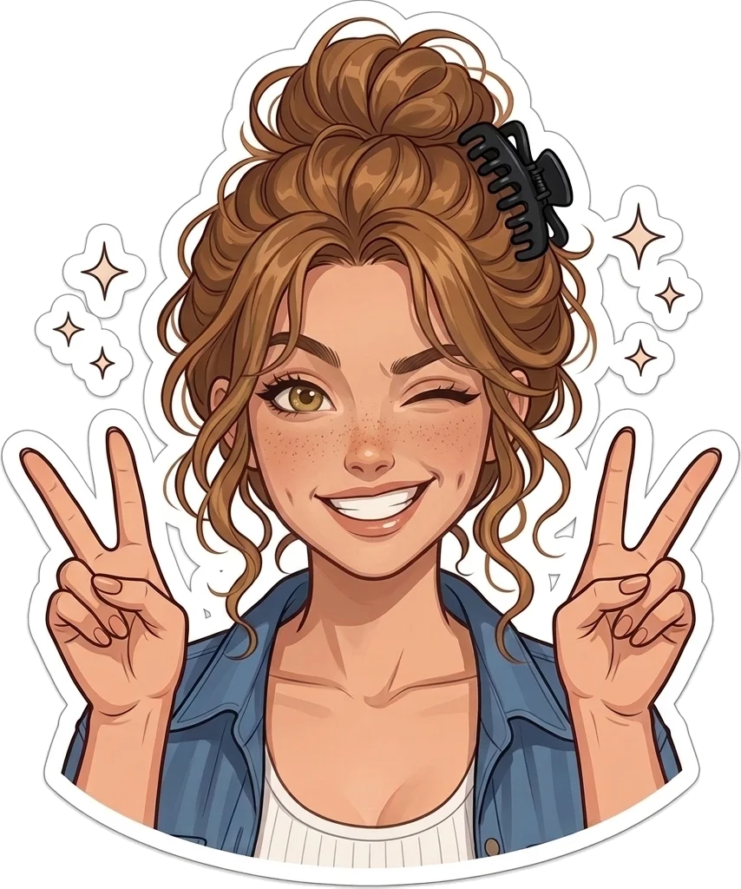
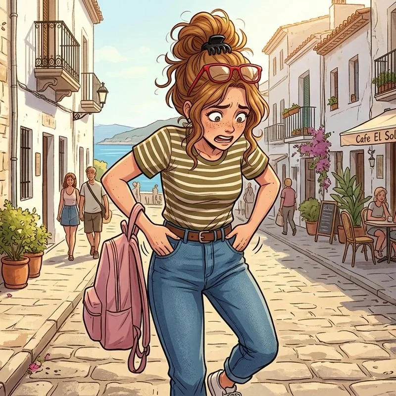
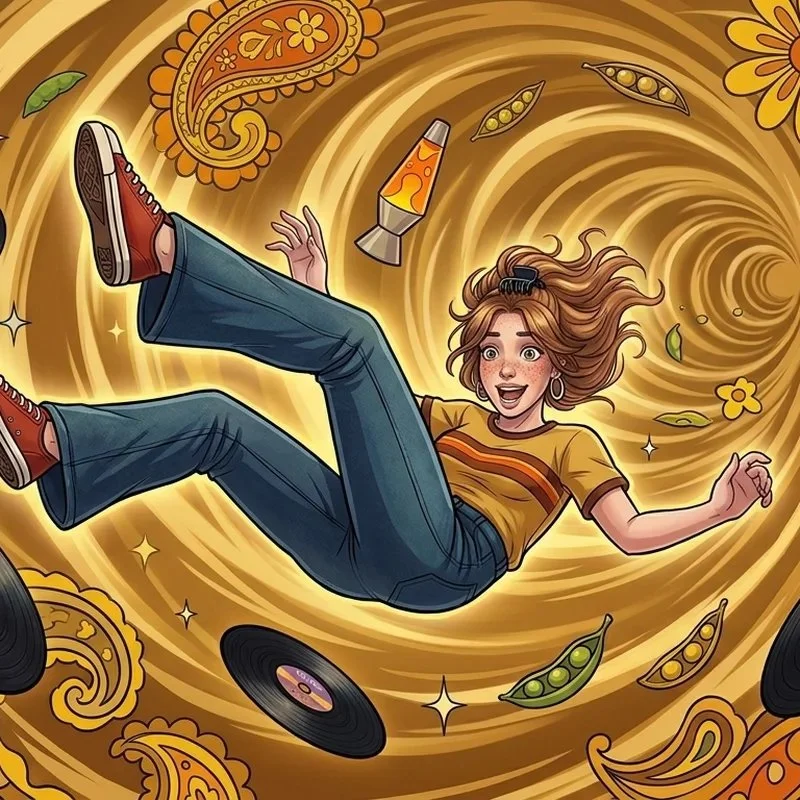
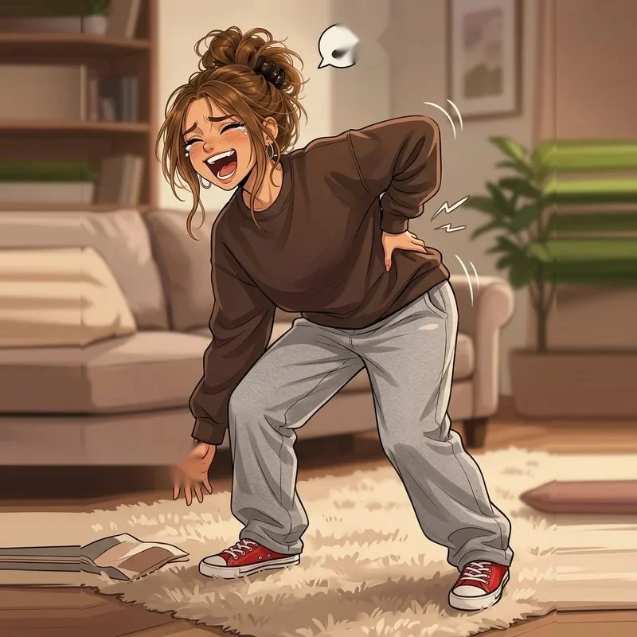

▶ Videoclip
⚡ Próximamente
¡Hola! Soy Lorena Torbellino: 20 años, voz dulce de niña buena y un talento casi sobrenatural para que todo en la vida me salga al revés. Bienvenido a mi universo musical.

Los 4 Álbumes Oficiales
Carátulas oficiales de alta fidelidad preparadas para plataformas digitales y distribución. Haz clic en cualquier disco para filtrar el cancionero.
La odisea de madurar, buscar aparcamiento en el Carrefour, perder llaves y las peleas cotidianas.

La ley de Murphy en clave de pop cómico: tostadas con mantequilla al suelo e inundaciones en casa.

Situaciones surrealistas, citas desastrosas, vecinos peculiares y compras impulsivas inútiles por internet.

Dolores de espalda prematuros a los 20, ilusión con la freidora de aire y preferir dormir a salir de fiesta.
Este tema aún no se ha estrenado oficialmente. La letra y el videoclip completo estarán disponibles tras su publicación en el canal de YouTube.
Descubre su galería de poses, sus crisis de viejoven a los 20 años y las anécdotas más disparatadas de sus videoclips: desde chocarse contra una farola hasta el monstruo calamar del fregadero.